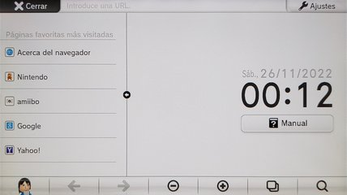
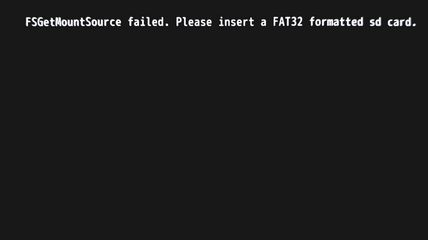

Identificar Indexiine
Todas las Wii U, incluso las que nunca han sido modificadas, tienen un exploit en el navegador de Internet. Cargar una página en Internet para aprovechar ese exploit es un método llamado Webhack, pero hay una variación de este método donde en lugar de cargar una página en Internet basta con cargar la página de inicio del propio navegador de la consola, para logar esto se modifica del archivo Index.html original del navegador, a esta modificación se le llama Indexiine.
Para una correcta identificación debes quitar la tarjeta SD de la ranura frontal de la Wii U. Después de hacer la prueba puedes volver a conectar la tarjeta SD en la ranura frontal, no se pierden los juegos ni nada de lo que ya tienes instalado.
Instrucciones
Actualmente, muchas paginas web no funcionan correctamente en el viejo navegador de Internet de la Wii U. Obtener un código de error 112-1035 es algo normal al visitar algunos sitios web.
- Con la consola apagada quita la tarjeta SD de la ranura frontal de la Wii U.
- Enciende la consola y accede al menú de Wii U.
- Abre el navegador de Internet y observa que ocurre en la pantalla del Wii U GamePad. El navegador debe estar en su página de inicio. Espera unos 20 segundos sin presionar ningún botón.
- Si aparece el mensaje
FSGetMountSource falied. Please insert a FAT32 formatted sd cardentonces la Wii U tiene Indexiine. - Si después de los 20 segundos no apareció ningún mensaje y puedes usar el navegador desde su página de inicio con normalidad entonces la Wii U no tiene Indexiine.
- Apaga la consola y vuelve a conectar la tarjeta SD.

